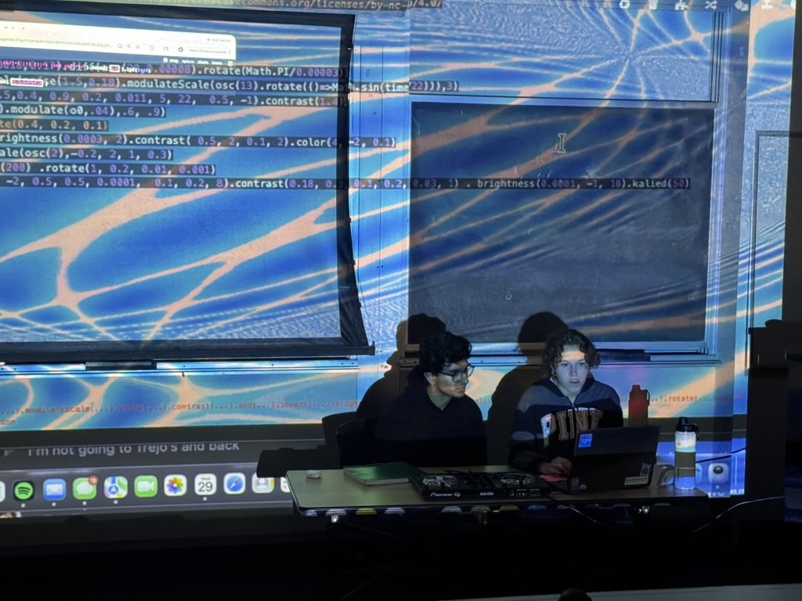
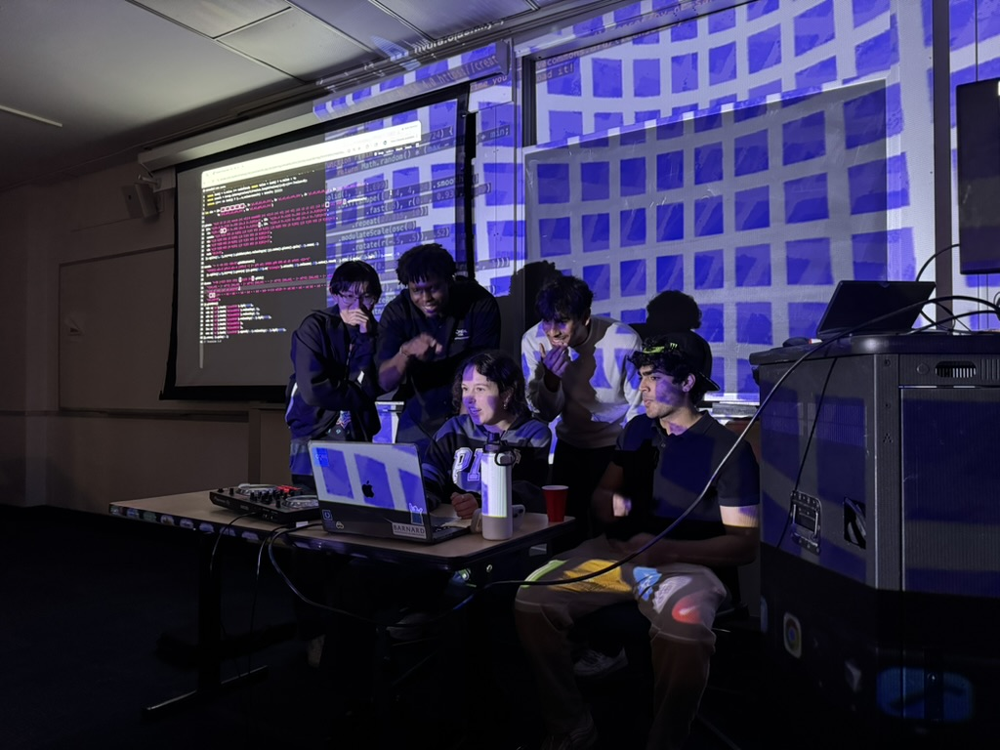
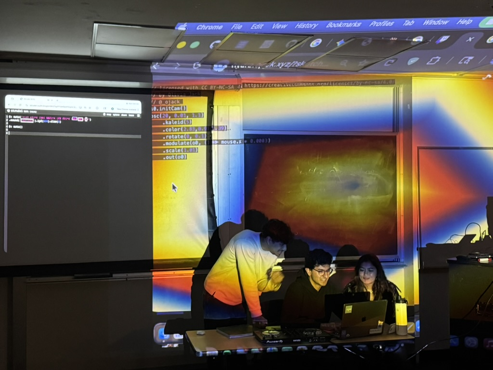
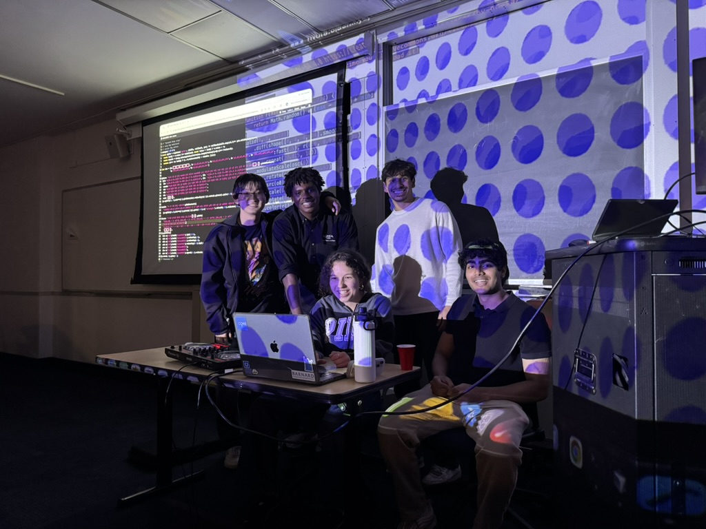

Aedin Pereira, Maria Showalter, Ahanaf Tajwar
Our motivation stemmed from our own personal experience of feeling like our computer science major ushered us into rigid and theory heavy courses which limited our creativity, a common feeling that many of our peers felt. With the introduction of live coding, we felt as though we were able to explore our creative passions and blend them with the coding skills and techniques we had learned in class. We felt as through we could create a space for our peers to hear and learn about live coding, and hopefully inspire them to incorporate creativity into their own fields. We also wanted to tap into our CS communities to teach them live codding to show them a different side of the field.
Our implementation of this project required us to plan and advertise the event. We decided to host the event in Uris Hall to provide a space that was accessible to all students. We sourced projectors from the library to project Hydra visuals and our code, replicating the setup we use in class so the audience could see exactly what was happening behind each performance. Next, we recruited some of our classmates to come play sets, and Maria and I played sets ourselves to show off live coding. We staggered the performances so that there was a natural rhythm to the night, with shorter intro sets at the beginning to ease the audience in and longer, more experimental sets later on. The last step was to do outreach to the broader community. We did this by creating posters to hang up around campus and tapping into communities like AKPsi, the premier business fraternity on campus, Lambda Phi Epsilon, the Asian fraternity, and CORE, the entrepreneurship club. All of these clubs are ones we are a part of, and we aggressively advertised to find others who shared the sentiments detailed in our motivation. This grassroots approach helped us reach students who might never have encountered live coding otherwise, drawing in an audience from across very different corners of campus. After showing the audience live coding, we invited people to come try it and taught them the basics. Maria and I were able to walk five people through live coding and let them demo in front of the crowd, which turned the event into something participatory rather than just a performance. We also recorded and documented the whole event on Twitch, with the recording and pictures included below



